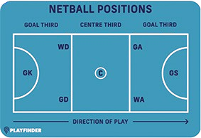
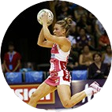
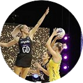

There are 7 positions when playing Netball and each have very different but needed roles. GS, GA, WA, C, WD, GD and GK. This website is going to help you understand the roles of each Netball position and the most benifital drill to do for each position.

About attack
The attacking players work together to get the ball to the shooting circle and score goals for the team. Their role is crucial because they have to create space, have good accuracy and get into good positions to shoot the take the shot. If the do not successfully execute the shots all the work from the team doesn't count to anything on the score.
About mid-court

Mid court players work together to get the ball from defence to the attackers. Their role is crucial because they get the ball from on end of the court to the other, they help both the attackers and defenders and helps control the ball. Without having midcourters the team struggles to control the game.
About defence

Defence works together to stop the opposition from scoring goals. Their role is crucial because they intercept passes and mark the other teams attackers preventing them from scoring. Defence help the team get possession of the ball and create opportunities to get ahead.